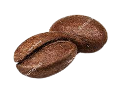
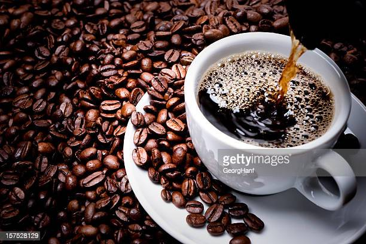

Coffee 
Coffee.Coffee is a brewed coffee brew that has been roasted and ground into powder. Coffee is a commodity in the world that is cultivated in more than 50 countries. Two varieties of coffee trees that are generally known are Robusta Coffee (Coffee canephore) and Arabica Coffee
(Coffea arabica).
Coffee.Coffee is a brewed coffee brew that has been roasted and ground into powder. Coffee is a commodity in the world that is cultivated in more than 50 countries. Two varieties of coffee trees that are generally known are Robusta Coffee (Coffee canephore) and Arabica Coffee
(Coffea arabica).
